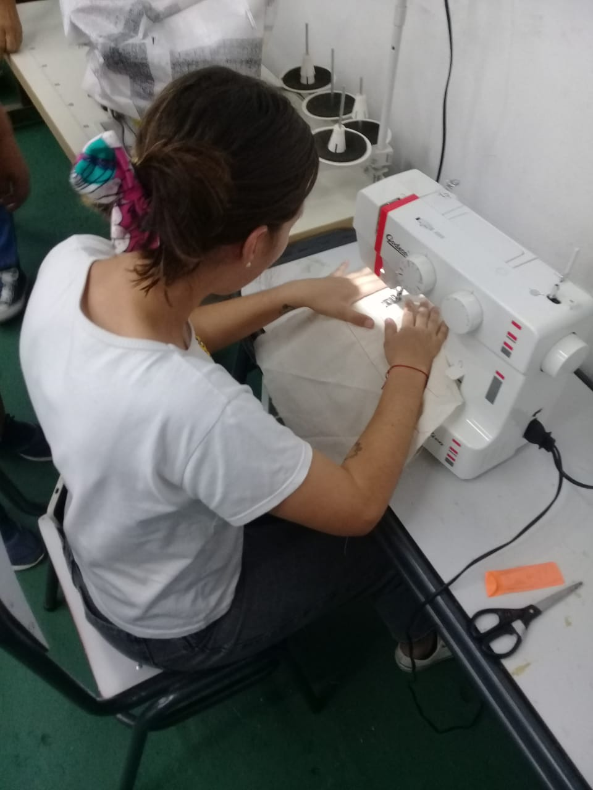
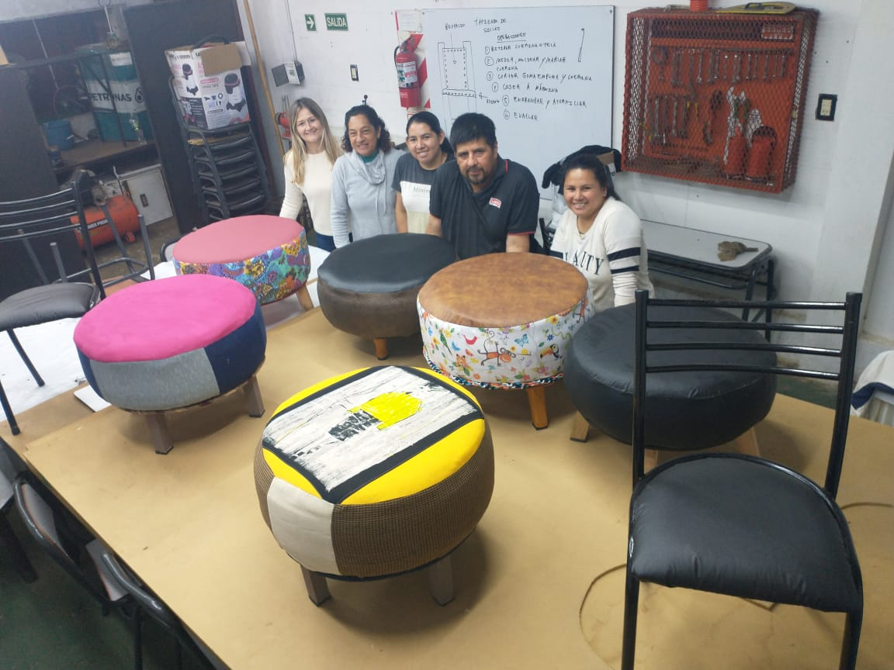

Trayectorías
Ciclo Adolescente en Soldador profesional
El programa apunta a la inclusión educativa de jóvenes y adolescentes de entre 16 y 18 años con Primario completo y que por distintas circunstancias han transitado trayectorias discontinuas en el sistema educativo y/o se encuentran cursando ofertas de Formación Profesional, en este caso formación profesional en Soldador Básico.
Confeccionista a Medida (Modista)
El Confeccionista a Medida está capacitado, de acuerdo a las actividades que se desarrollan en el Perfil Profesional, para interpretar prototipos o diseños para iniciar el trabajo de confección; trazar y transformar moldes base; cortar prendas de diferentes características; operar máquinas familiares y/o industriales para realizar el ensamble, cosido, y acabado de todo tipo de prendas a medidas con diferentes grados de complejidad; operar en la comercialización del producto terminado.
Tapicería de muebles
El/la Tapicero/a de Muebles realiza el patronaje, corte y confección de la cubierta exterior del mueble (tapizado), fijándola al esqueleto o la estructura a la que previamente habrá incorporado los elementos de suspensión y de relleno correspondientes, cumpliendo los criterios de calidad establecidos y la reglamentación vigente sobre prevención, seguridad y salud laboral.
